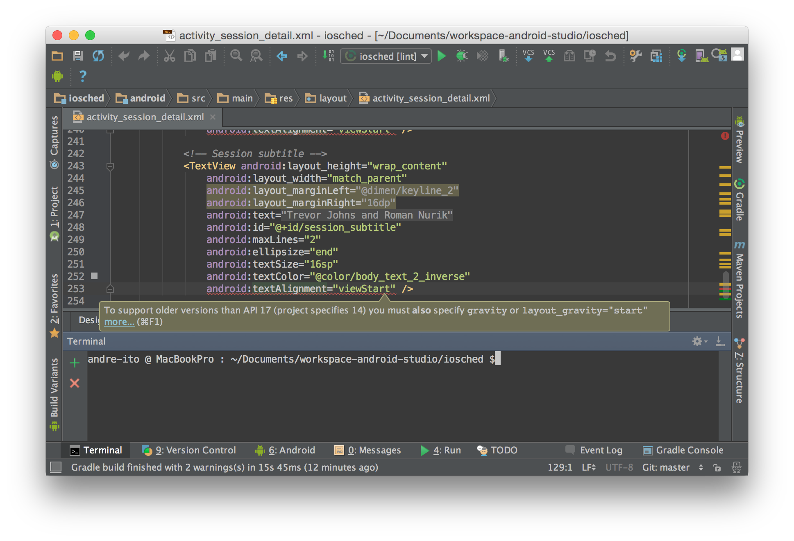
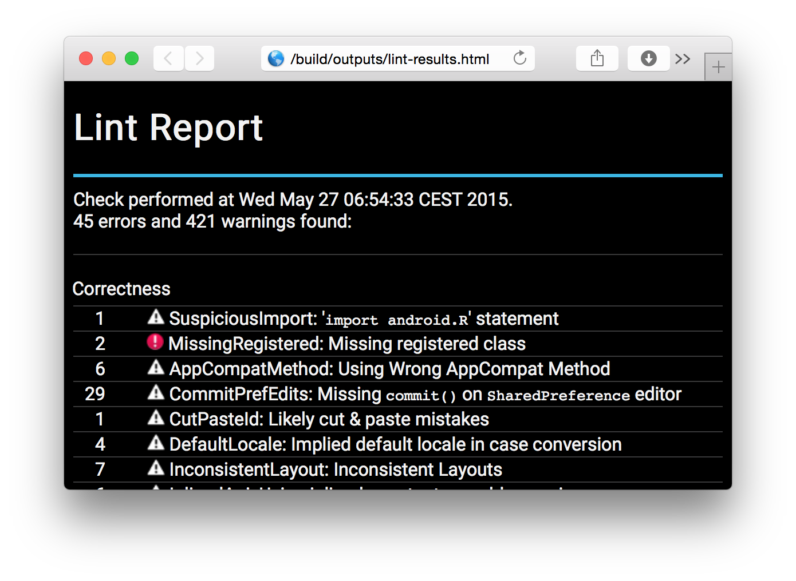
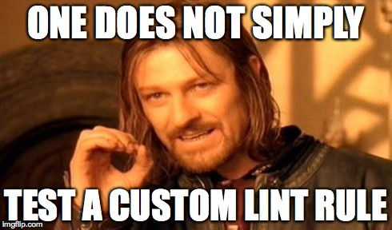
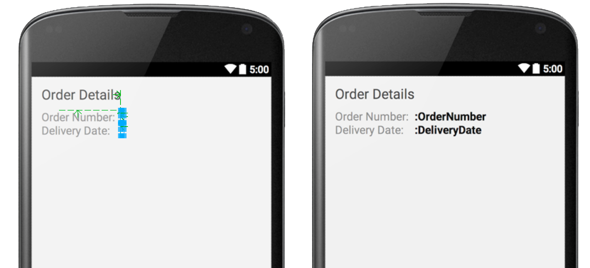
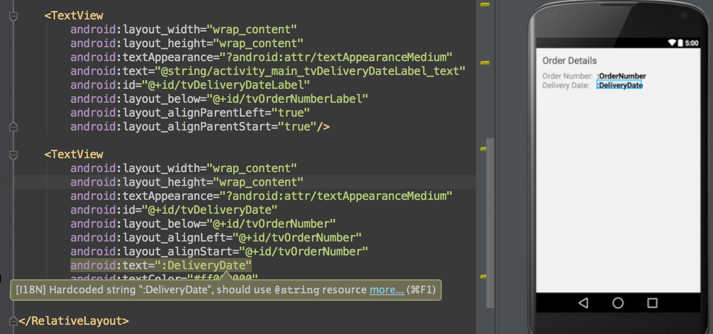

Software Architect @ it-objects


Core principles of the Lint API
IssueDetectorScannerIssueRegistryAn
Issueis a type of problem you want to find and show to the user.
IssueRegistryDetectorSeverityScope public static final Issue ISSUE = Issue.create(
"HelloWorld", //ID
"Unexpected application title", //brief description
"The application title should" //explanation
+ "state 'Hello world'",
Category.CORRECTNESS, //category
5, //priority
Severity.INFORMATIONAL, //severity
new Implementation( //implementation
HelloWorldDetector.class, //detector
Scope.MANIFEST_SCOPE //scope
)
);
A
Detectoris responsible for scanning through code and findingIssueinstances and reporting them.
IssuesScanners public class HelloWorldDetector extends Detector
implements XmlScanner {
public static final Issue ISSUE = Issue.create(...);
@Override public Collection<String> getApplicableElements() {...}
@Override public Collection<String> getApplicableAttributes() {...}
@Override public void visitElement(@NonNull XmlContext context,
@NonNull Element element) {...}
@Override public void visitAttribute(@NonNull XmlContext context,
@NonNull Attr attribute) {...}
}
A
Scanneris a specialized interface forDetectors.
JavaScannerClassScannerBinaryResourceScannerResourceFolderScannerXmlScannerGradleScannerOtherFileScanner| JavaScanner | XmlScanner |
|---|---|
applicableSuperClasses() |
getApplicableElements() |
checkClass(...) |
visitElement(...) |
getApplicableMethodNames() |
getApplicableAttributes() |
visitMethod(...) |
visitAttribute(...) |
| ... | ... |
An
IssueRegistryis a registry which provides a list of checks to be performed on an Android project.
IssueRegistrygetIssues()MANIFESTjar {
manifest {
attributes 'Lint-Registry':
'your.package.name.CustomIssueRegistry'
}
}
public class CustomIssueRegistry extends IssueRegistry {
@Override
public List<Issue> getIssues() {
return Arrays.asList( //Note:
MyCustomCheck.ISSUE, //A check actually is a detector.
MyAdvancedCheck.AN_ISSUE, //One detector can report
MyAdvancedCheck.ANOTHER_ISSUE //multiple types of issues.
);
}
}
$ git clone https://github.com/a11n/CustomLintRulesWorkshop.git
$ cd CustomLintRulesWorkshop
$ git checkout -f section-1
SdkConstants wherever possibleLintUtils when applicable
LintDetectorTest
public class HardcodedValuesDetectorTest extends AbstractCheckTest {
@Override
protected Detector getDetector() {
return new HardcodedValuesDetector();
}
public void testStrings() throws Exception {
assertEquals(
"res/layout/accessibility.xml:3: Warning: [I18N] Hardcoded string \"Button\", should use @string resource [HardcodedText]\n" +
" <Button android:text=\"Button\" android:id=\"@+id/button1\" android:layout_width=\"wrap_content\" android:layout_height=\"wrap_content\"></Button>\n" +
" ~~~~~~~~~~~~~~~~~~~~~\n" +
"res/layout/accessibility.xml:6: Warning: [I18N] Hardcoded string \"Button\", should use @string resource [HardcodedText]\n" +
" <Button android:text=\"Button\" android:id=\"@+id/button2\" android:layout_width=\"wrap_content\" android:layout_height=\"wrap_content\"></Button>\n" +
" ~~~~~~~~~~~~~~~~~~~~~\n" +
"0 errors, 2 warnings\n",
lintFiles("res/layout/accessibility.xml"));
}
}
Lint JUnit rule
@Rule public Lint lint = new Lint();
@Test
public void test() throws Exception {
lint.setFiles("AndroidManifest.xml", "res/values/string.xml");
lint.setIssues(MyCustomRule.ISSUE);
lint.analyze();
List<Warning> warnings = lint.getWarnings();
assertThat(warnings).hasSize(2);
}
~/.android/lint/#!/bin/sh
# Build .jar
./gradlew assemble
# Install
if [ ! -d "~/.android/lint/" ]; then
mkdir ~/.android/lint/
fi
cp build/libs/lint.jar ~/.android/lint/
| Pros | Cons |
|---|---|
| just assemble and copy | no straightforward distribution and configuration |
| one resulting JAR | no project-specific rules |
| no changes in the project to analyze | inconvenient for multi developer teams |
| applied for all analyzed projects | inconvenient for CI environments |
dependencies {
compile fileTree(dir: 'libs', include: '*.jar')
}
dependencies {
compile 'your.package.name:custom-lint:1.0.0@aar'
}
Android application project
--app //default Android application module
--lint //Android library, acts as wrapper for the Lint rules
--lintrules //Java module with your custom Lint rules
project.afterEvaluate {
def compileLint = project.tasks.getByPath(':lint:compileLint')
compileLint.dependsOn ':lintrules:jar'
compileLint << {
copy{
from '../lintrules/build/libs'
into 'build/intermediates/lint'
}
}
}
| Pros | Cons |
|---|---|
| allows project specific rules | changes in project required |
| integrated within project | not applied for all analyzed projects |
| ideal for multi developer teams | (no official documentation on how to wrap into AAR bundle available) |
| perfect for CI environments |


| Natural names | Conventional names |
|---|---|
...ConsumedMaterialsActivityCustomerSignatureFragmentOrderConfirmationFragmentOrderDataModelOrderReportActivityOrderReportViewModelVanStockMaterialFragment... |
...ActivityConsumedMaterialsActivityOrderReportFragmentCustomerSignatureFragmentOrderConfirmationFragmentVanStockMaterialModelOrderDataViewModelOrderReport... |
activity_order_status.xmlfragment_customer_details.xmllist_item_purchase_order.xmlFrom experience, string references
<!-- fragment_customer_signature.xml -->
<TextView android:id="@+id/tvCustomerName"
android:text="@string/fragment_customer_signature_tvCustomerName_text" />
<EditText android:id="@+id/etCustomerName"
android:hint="@string/fragment_customer_signature_etCustomerName_hint" />
<Button android:id="@+id/btSubmit"
android:text="@string/fragment_customer_signature_btSubmit_text" />
<!-- string.xml -->
<string name="fragment_customer_signature_tvCustomerName_text">
Please enter the customer name:
</string>
<string name="fragment_customer_signature_btSubmit_text">
@string/literal_submit
</string>
<RelativeLayout android:id="@+id/llCustomerDetails" ... >
<ImageView android:id="@+id/ivCustomerName" ... />
<TextView android:id="@+id/tvCustomerName" ... />
<EditText android:id="@+id/etCustomerName" ... />
...
<Button android:id="@+id/btSubmit" ... />
</RelativeLayout>
Detectors and implementing ScannersLintUtilsBaseDetectors